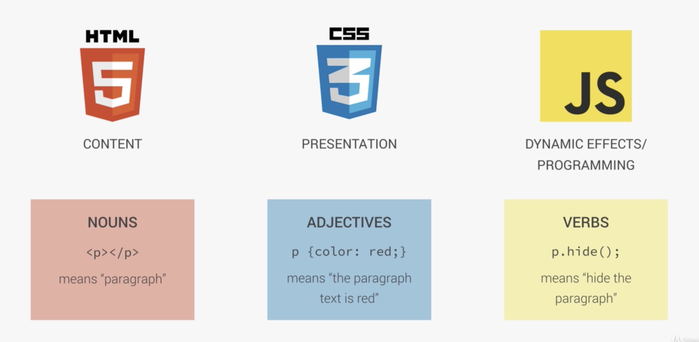
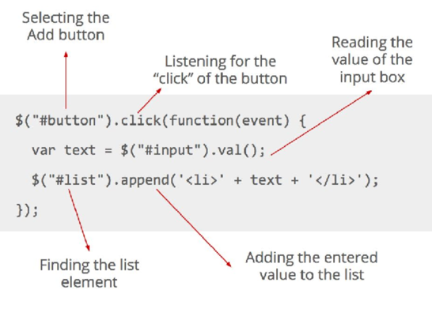

# Week 6
## Recap <ul class="recap-list"> <li class="recap-list__item"> <span>Week 1</span> <i class="fab fa-html5"></i> </li> <li class="recap-list__item"> <span>Week 2</span> <i class="fab fa-css3-alt"></i> </li> <li class="recap-list__item"> <span>Week 3</span> <i class="fab fa-github-square"></i> </li> <li class="recap-list__item"> <span>Week 4</span> <i class="fas fa-user"></i> </li> <li class="recap-list__item"> <span>Week 5</span> <img src="images/bootstrap-logo.png" alt="Boostrap logo"> </li> <li class="recap-list__item"> <span>Week 6</span> <i class="fab fa-js-square"></i> </li> </ul>
### JavaScript & jQuery ## What is JavaScript?? 1. HTML to creates the actual content of the page, it is the basic structure and the contents of a website. 2. CSS is responsible for the design of the webpage – how everything looks, for example, colours and where elements are on the page. 3. JavaScript is responsible for interactivity on a webpage which helps engage a user.
### Nouns, Adjectives & Verbs 
### JavaScript versions - ES5 - ES6/ES2015 - ES7/ES2016 - ES8/ES2017
### Using JavaScript
### Numerical operations, comparators & strings - **Numerical operations:** +, -, *, /, % - **Comparators:** ==, ===, !=, <, >, <=, >=, booleans - **Strings:** Ordinary text wrapped in "quotes"
### Expressions
### Task 1. Working in pairs open the console in your browser window, try enter the following. <ol type="a" class="task--expressions"> <li>5 + 2;</li> <li>"Hello" + " " + "world";</li> <li>25 / 6;</li> <li>1 === 1;</li> <li>1 + 1 === 2; </li> <li>360 > 70;</li> <li>10 * 34;</li> <li>10 != 10;</li> </ol> 2. Discuss the different types of operators.
### Functions
### Calling functions
### Functions with parameters
### Functions with parameters (call)
### Functions with parameters ES6 version
### Using JavaScript in a web page ## Wrong ``` <body> <script> //Our JavaScript code goes in here </script> </body> ``` ## Right ``` <body> <script src="js/main.js"></script> </body> ```
### What is jQuery?? * JavaScript is complicated to learn and a little verbose * jQuery is a library containing ready-made JavaScript functions you can use out-of-the-box * It will speed up development * Unlike JavaScript it does not come with every browser * You need to link to the jQuery library from your website pages
### JavaScript VS jQuery https://codepen.io/antonymoss/pen/jJpojN?editors=1010
### Getting jQuery into your website * Download the jQuery file, add it to your website project folder – link to the file from your HTML pages * Link to the jQuery CDN from your HTML pages
### Downloading jQuery https://jquery.com/download/ * Download the most recent and compressed version * Place the file in your website project folder * Link to the file just before your body tag and other JS links ``` <body> <script src="js/jquery-3.3.1.min.js"></script> </body> ```
### Using the jQuery CDN * Google – jQuery CDN * You should see http://code.jquery.com/ * Copy and paste the link from the pop-up window * Paste link just before your body tag and other JS links ``` <body> <script src="http://code.jquery.com/jquery-3.3.1.min.js" integrity="sha256-FgpCb/KJQlLNfOu91ta32o/NMZxltwRo8QtmkMRdAu8=" crossorigin="anonymous"></script> </body> ```
### The anatomy of a jQuery function
### Demo https://codepen.io/dianaklee/pen/epBypZ
### Demo https://codepen.io/anon/pen/JYxGpv
### Dissecting the CodePen example 
# Back to our Bootstrap project
### Fixing the navbar in your Bootstrap project <div class="fixing-navbar"> <div class="fixing-navbar__col"> <p>Clicking the menu button on mobile does nothing</p> <p>It needs Twitter Bootstrap and jQUery</p> <a href="https://github.com/CodeFirstGirls/bootstrap4_exercise/tree/gh-pages">Github link</a> </div> <div class="fixing-navbar__col"> </div> </div>
### Adding the HTML markup Copy and past the code below directly under the <body> tag ``` <nav class="navbar navbar-expand-lg navbar-dark fixed-top"> <div class="container"> <a class="navbar-brand" href="#">Sam's Sarnies</a> <button class="navbar-toggler" type="button" data-toggle="collapse" data-target="#navbarNavAltMarkup" aria-controls="navbarNavAltMarkup" aria-expanded="false" aria-label="Toggle navigation"> <span class="navbar-toggler-icon"></span> </button> <div class="collapse navbar-collapse justify-content-end" id="navbarNavAltMarkup"> <div class="navbar-nav"> <a class="nav-item nav-link" href="#buzz">Testimonials</a> <a class="nav-item nav-link" href="#mission">About</a> </div> </div> </div><!-- .container --> </nav><!-- .navbar --> ```
### Copy the Bootstrap JS to your project folder
### Adding the Bootstrap jQUery file to your project ``` <!DOCTYPE html> <html lang="en-GB"> <head> <title>Sam's Sarnies</title> <meta content="width=device-width, initial-scale=1" name="viewport"> <link href="https://fonts.googleapis.com/css?family=Vast+Shadow" rel="stylesheet"> <link href="css/bootstrap.min.css" rel="stylesheet"> <link href="css/custom.css" rel="stylesheet"> </head> <body> <script src="https://code.jquery.com/jquery-3.3.1.slim.min.js"></script> <script src="js/bootstrap.min.js"></script> </body> </html> ```
### The fixed navbar <div class="fixing-navbar"> <div class="fixing-navbar__col"> <p>Clicking the menu button on mobile now opens the menu</p> </div> <div class="fixing-navbar__col"> </div> </div>
### Task * Fork the project for week 6 and download it into your coding folder * Add jQuery using a CDN: make sure it is called above the other JS files * Read through the code on the "background.js", try and complete the function which will change the background when the button is clicked * Extension task: using variables, change the text in the span to be the name of the artist when the background changes https://github.com/CodeFirstGirls/beginners-week-six
### Homework Carry on with the challenge, add some JS to your first site and carry on with your group porjects!
### Useful resources * https://stackoverflow.com/ * https://www.w3schools.com/ * https://css-tricks.com/ * https://developer.mozilla.org/en-US/ * https://www.codecademy.com/learn